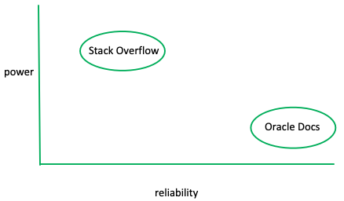

, or not to ,
, or not to ,You’re a computer science student applying to your dream co-op. You are holed up on the 4th floor of Snell, rapidly typing, nervously trying to finish your interview coding challenge before the 2 hour time limit is up.
Shoot, you can’t remember the syntax for a 2d array.
You swiftly bring up a new tab and throw “2d array syntax” into Google search. The first result is a link to the infamous Stack Overflow and the second is a link to Oracle’s official Java documentation. You know that you should click the ladder, but you’re on a time crunch and don’t even entertain the idea of scanning through the terrifyingly dense, hard to read documentation right now.


This was the situation I found myself in on Wednesday night, and, alas, I followed the first link and Stack Overflow gave me the exact tid bit of responsive knowledge I needed to get my program to compile. And, as a 21st century human who can’t help but prefer to “scan rather than read”, I was elated to have read 1 sentence total.
Now some of you may be thinking
wow, Caroline, you totally just exposed yourself about using external sites for help during a job interview! isn’t that cheating?
But, the instructions of the coding challenge explicitly allowed for the use of the the internet, including SO...
Stack Overflow is a crowd-sourcing site where developers share programming solutions in a Q&A format. It really is the go-to hub for reactive CS knowledge, seeing 9+ billion page views from 100+ million users in 2019.
SO’s self proclaimed mission is to “help everyone who codes learn and share their knowledge,” but its recieved its fair share of criticism. BBC dubbed its users "Lazy developers who copy solutions" and this Cornell study voices the security dangers of crowd-sourced code snippets.